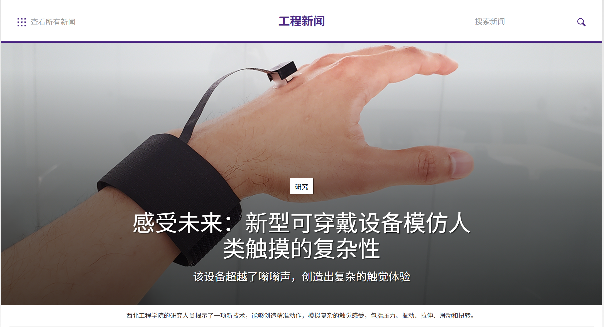
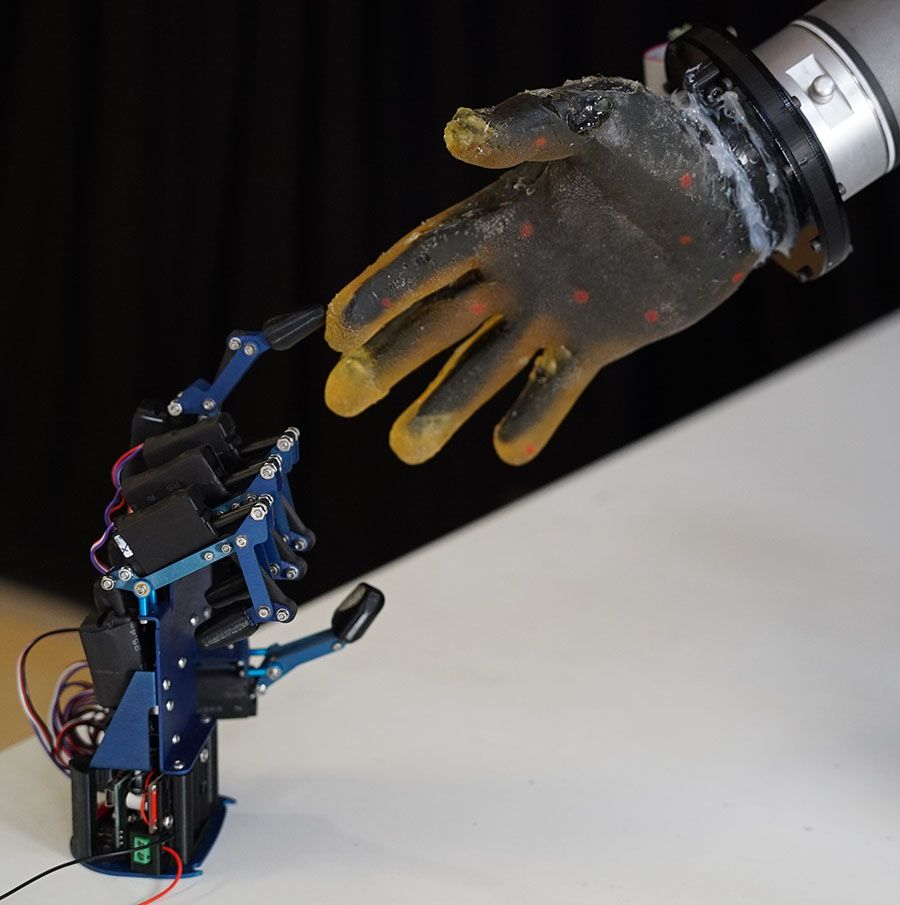

OcuWear Lite：面向双手占用场景的近手交互设计
01 设计背景与问题定义
现实冲突：高频物理场景数据
在日常移动互联生态中，用户可能频繁处于“双手被物理占用，但仍需与数字设备进行有限交互”的状态。根据多维用户问卷调研，核心限制情境及其发生概率分布如下：
现有交互方式的局限性
现有交互范式在上述噪声与肢体受限环境下，可能面临明显的可用性问题：
- 物理触屏：在公共推搡或运动环境中，部分用户报告 54.74% 出现“点不准与误触”现象，且存在设备跌落与液体侵入的潜在风险。
- 语音交互：在骑行逆风、地铁嘈杂等强风噪环境下信噪比较低；同时在安静公共场合可能涉及隐私顾虑或社交不适。
- 手表或耳机代偿：可能依赖肢体大幅度抬腕或越肩动作，在衣物包裹或手臂受力受限时可用性下降。
核心挑战： 在交互受限的情况下，约42.34% 的用户可能选择暂时放弃操作；另有41.61% 的用户会尝试冒险使用手机（可能引发安全隐患）。目前市场仍较少有专门面向双手占用场景下的“近手、盲操式”底层输入方案。
02 设计目标
本方案尝试探索一种不依赖传统触屏范式的交互方式，希望在不释放双手原生抓握姿态的前提下，提供一种可行的 “脱离手机的近手交互” ，可以兼顾以下几个方面：
- 非视觉盲操作：依托本体感受，尽量减少对视觉瞄准与屏幕跟随的依赖，有助于保障行动安全。
- 低动作成本：交互范围收束于亚厘米级，无需显著改变肢体现有的抓握与承重姿态。
- 社交隐蔽性：通过微小型动作实现较为私密的操作，降低对周围人的影响。
- 场景鲁棒性：结合硬件解耦与端侧动态抗噪处理，尝试抑制环境中的动态干扰。
03 现有方案分析及相关理论基础
竞品架构对比
| 交互方案 | 物理本征优势 | 双手占用场景下的典型局限 | 本方案的差异化方向 |
|---|---|---|---|
| 智能手表 | 信息流多级查看 | 提重物或衣袖遮挡时，抬腕操作受到明显限制，交互可达性降低。 | 免抬腕控制：在手腕活动受限场景中仍可保持一定的控制能力。 |
| 蓝牙耳机 | 触觉反馈与语音 | 部分操作需要“举手越肩”，戴厚手套或未佩戴耳机时可用性受限。 | 免越肩微操：交互动作发生在手部原生区域，减少大幅度空间位移。 |
| 语音助手 | 零手部触控 | 在强风噪或嘈杂环境中识别率下降；公共场合存在隐私顾虑。 | 隐式数字微操：本地端侧处理，对外部环境噪声相对不敏感。 |
| 视线与头部追踪 | 零肢体负荷 | 依赖视觉瞄准与环境光，颠簸状态下易疲劳且认知负荷较高。 | 肌肉记忆路径：基于手部自然解剖结构，视觉依赖度较低。 |
相关理论支撑
04 设计方案硬件架构
4.1 可选的两种硬件形态
针对不同活动强度及佩戴偏好，硬件层可提供如下两种可穿戴外设形态：
- 形态一 智能指环：采用超薄高致密生物陶瓷或柔性工程树脂（壁厚 约2.2mm），佩戴于食指根部。内置低功耗蓝牙SoC与震动马达，适用于日常活动场景。
- 形态二 柔性表皮贴片：厚度约 0.3mm 的医用级低敏水胶体柔性电子贴片，贴附于食指外侧。该技术形态与近年来柔性电子皮肤的发展方向具有一定契合性。例如，西北大学提出的高分辨率可穿戴触觉感知设备[4]以及国内第三代电子皮肤产品探索[5]，均表明柔性触觉感知技术正在向轻量化、可穿戴化方向发展，为本设计提供了技术参考。


4.2 物理层抗干扰策略
针对“口袋摩擦、手部潮湿以及运动压力变化可能带来的信号干扰”，系统尝试构建由物理、硬件、算法组合的端侧抗干扰架构：
-
【物理层：基于手部受力区域的传感布置】
核心思路：空间位置解耦与主动避障。
功能闭环：传感矩阵主要部署于食指根部至第二关节的“外侧裤缝区”（大拇指自然垂落时可接触的区域）。该区域相对避开了抓握或提重物时的“主受力面”，有助于减少皮肤重度形变引起的伪触发风险。 -
【硬件层：多通道差分共模抑制 (CMRR) 与界面隔离 [6]】
核心思路：空间特征差分与物理介质阻隔。
功能闭环：传感层表面可覆盖低摩擦系数的 PTFE 疏水涂层，减少汗液渗透的影响。内部采用交叉指型电容阵列设计：当衣物面料挤压产生大面积、同步的全局形变时，系统将其识别为“共模信号”并通过差分放大器在硬件级进行抑制；而当大拇指执行特定滑行时，产生的局部“差模信号”可被相对精准提取，实现一定程度的硬件级噪声抑制。

-
【算法层：级联门限与能量方差剪枝 [7]】
核心思路：时域特征识别与压摆率门限限定。
功能闭环：端侧低功耗 SoC 实时计算电容信号的时域一阶导数与能量方差。行走颠簸、摆臂等产生的衣物摩擦杂波，在时域上通常表现为相对随机、低频、连续的波动；而明确的肌肉操控可能产生更高的动态压摆率特征。算法通过级联门限尝试过滤部分伪随机低频噪声，提高输入的确定性。级联门限端侧多维信号筛查流SIGNAL原始信号输入GATE 01压摆率门限校验时域变化斜率GATE 02能量方差门限校验信号持续强度GATE 03时间窗口门限校验动作生理时长ACTION触发最终指令
1. CMRR（共模抑制比，Common Mode Rejection Ratio）： 衡量放大器抑制共模信号（两侧输入端同时收到的相同噪声信号）能力的一项指标。在本项目中，当衣物布料大面积挤压手指时，传感阵列各通道可能同时产生相似的电荷形变噪声（即共模噪声）；CMRR 机制利用差分电路，能够将这种大面积的全局相同噪声在硬件底层进行差分抵消，同时相对保留大拇指局部滑动带来的特异性“差模信号”。
2. SoC（系统级芯片，System on Chip）： 指将微处理器、模拟电路、数字逻辑、时钟及电源管理等多个功能模块高集成度地封装在单块芯片上的微型系统。本项目由于受限于智能指环和表皮贴片的物理体积与功耗要求，需采用端侧超低功耗 SoC，在不依赖手机主处理器的情况下，在外设端完成信号的硬件去噪与手势轨迹提取。
05 核心交互方式设计
5.1 基础交互映射（固定映射）
为了减少认知漂移，底层物理映射关系相对固定，不随上下文频繁变动，如下表所示：
| 滑动行为 | 物理映射功能 |
|---|---|
| 沿食指侧面 1~5mm 上滑 | 接听来电 或 媒体音量增加 |
| 沿食指侧面 1~5mm 下滑 | 挂断拒接 或 媒体音量减少 |
| 向虎口方向内滑 | 切换至媒体下一首 |
| 向指尖方向外滑 | 切换至媒体上一首 |
| 局部亚厘米级双击 | 通话静音切换 或 播放暂停 |
| 局部区域长按 | 拒接并自动回复短信 或 触发紧急 SOS 定位 |
实时演示：近手隐式交互模拟
下方为手势测试沙盒。您可以按住鼠标左键（或触摸）并在黑色画布区域划动，模拟拇指在食指侧壁上的微滑动输入，系统将尝试识别手势并给出映射示意：
技术展望：中远期智能演进
在未来生态扩展中，可考虑引入响应式移动界面的预期性交互范式 (Anticipatory Interaction Paradigm)[8]。相比传统“用户指令-设备响应”模式，预期性交互可尝试通过端侧轻量级模型，在本地分析用户的显隐式意图流，提前预测用户的下一个行为。有研究表明，通过从用户历史行为中学习隐式意图，可以提升移动智能体对个体习惯的适应能力[9]。
在复杂场景下，可考虑结合多模态预测模型与意图分解模型 (Intent Decomposition Model)[10]，系统可尝试将复杂用户任务拆解为多个可识别的行为单元，从而辅助提升场景理解能力。：
- 多模态预测：综合分析时间、GPS定位、环境风噪以及骨传导传感器收集到的生理信号，辅助判断用户当前的场景状态。
- 意图分解机制：将复杂的来电情境分解为元数据流（如：将“未知高频来电”分解为“可能为快递外卖”或“疑似推销”）。
基于上述AI分析，系统可在语音通道内对来电优先级进行辅助排序，并通过耳机进行简要提示（如“顺丰快递，建议接听”）。设计上，AI主要提供辅助建议，最终控制权仍保留给物理映射，以避免人工智能越权带来的控制感下降。
5.2 近手交互模式激活的三要素
为降低口袋内因布料挤压或意外碰撞导致的伪触发概率，系统设置了三要素协同级联校验机制。仅当以下三个条件同时满足时，交互通道才被激活：
为了保障续航，系统可支持多模态智能级交互[12]与空间锚定 (Spatial Anchoring)技术。空间锚定将虚拟控制区通过硬件差分算法与食指解剖学坐标关联，以减少因指环轻微位移导致的控制漂移。在非交互状态下，整体挂起功耗可设计为低于 1 毫瓦（mW）。
同时，考虑到盲操时的容错需求，系统可内置约 2 秒的时域容错纠错窗口。若用户误触发或滑动越界，可在 2 秒内执行一次反向滑动，端侧内核支持撤销上一条指令，以增强人机信任感。
06 典型使用场景
本方案重点关注以下三类典型场景：
- 场景 A 通勤抓扶手接电话：高峰期地铁中，用户单手抓握吊环。手机在裤袋鸣响，智能手表被衣袖遮挡，语音助手受噪音干扰。用户可尝试在拇指原位执行 1~5mm 的微上滑 来接听来电。
- 场景 B 双手提重物来电处理：双手提物或单手撑伞时，突发来电。用户可利用大拇指在非主受力区做微下滑挂断来电，或双击切换静音，无需放下手中物品。
- 场景 C 极速骑行与运动控制：骑行者双手紧握车把保持平衡，强风噪下语音助手难以识别。用户可通过指侧微滑动完成媒体切换或通话管理，视线保持在前方路面。
策略说明： 对于“厨房做饭或洗碗（手油/手湿）”场景，本设计在第一阶段暂不优先覆盖。后续可考虑通过外置毫米波雷达外设进行非接触感知，利用卷积神经网络手势识别[13]与空间计算[14][15]实现接触式传感的补充，以提升技术投入产出比（ROI）。
07 设计特点总结
本方案尝试在移动人机交互领域提供以下几个潜在特点：
- 1. 脱离手机的隐式感知：在手部原生抓握姿态中尝试实现一定程度的数字控制。
- 2. 低动作成本：将操作行为收束至 1~5mm 的大拇指微运动，力求将对物理行为的干扰降至较低水平。
- 3. 物理与技术的抗干扰性：通过“非主受力外侧裤缝区”的解剖学定位，配合硬件级多通道差分共模抑制与自抗扰滤波算法，尝试抑制口袋伪信号。
- 4. 社交隐蔽性：交互动作微小且无声，有助于在公共场合提供相对体面的操作方式。
08 设计总结
本方案尝试将移动交互的视角从“肢体抽离去迁就屏幕”转向“在既有手部动作中融入数字控制”。核心问题在于探讨：当用户的双手被现实物理任务占用时，如何维持人与数字设备之间相对自然的连接。